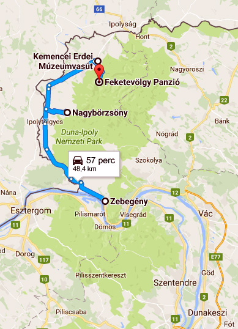

Kirándulás a Börzsönybe
Kedves Kollégák! Kedves Tanulók!
Gyertek kirándulni! Megyünk a Börzsönybe.
Egész napos autóbuszos kirándulást szervezünk e hét szombatra a Börzsönybe.
Úticéljaink:
-

Zebegény
- Séta a Kálvária dombra
- Dunai panoráma és fényképezés a kilátóból
- Duna-parti kavicsdobálás
-

Nagybörzsöny
- Különleges lekvárok kóstolása és vására - lekvar-lak.hu
- Ebéd a Malomkert étteremben - borzsonyhotel.hu
- Vízimalom megtekintése idegenvezetéssel
-

Kemence
- Ismerkedés az Erdei Múzeumvasúttal - kisvasut.hu/kemence
- Kisvonatozás a Csarna-patak völgyében
- Vacsora a Feketevölgy Panzióban - feketevolgy.hu
Útvonalunk térképe:

Indulás:
gyülekező reggel 700-tól, indulás 715-kor az iskola parkolójából
Várható hazaérkezés:
este 10 óra körül
Jelentkezés:
Mókus Örsnél telefonon, vagy e-mailben